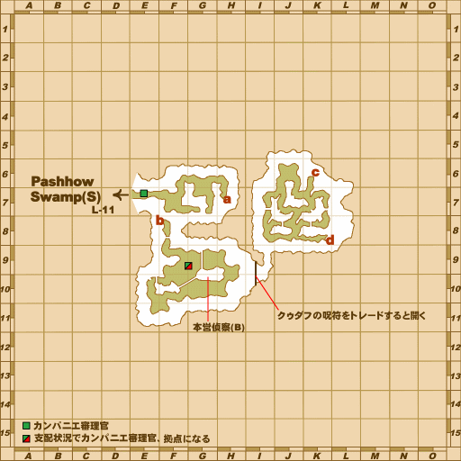
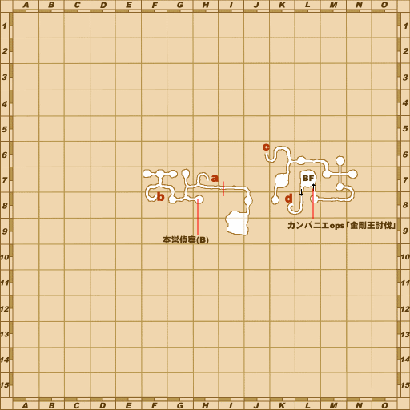

Before you begin
- Complete B-08: Honor Under Fire.
- Reach WotG 26: Fate in Haze.
- Bring one Beeswax and one Red Textile Dye.
Starting point
Gentle Tiger · Bastok Markets [S] · H-6
Walkthrough
- Speak to Gentle Tiger at H-6, then enter Beadeaux [S] for a scene. Its entrance is reached from Pashhow Marshlands [S] at L-11.
- Return to Gentle Tiger for the next scene.
- Speak with Red Axe at I-8 in The Eldieme Necropolis [S].
- Trade Leadavox at J-6 in Vunkerl Inlet [S] one Beeswax and one Red Textile Dye together to receive the Wax Seal.
- Return to Red Axe with the Wax Seal, then speak with Gentle Tiger again.
- Examine the Hoarfang at F-10 in Beaucedine Glacier [S], on the dark structure in the middle of that map square. Collect the Super Reraiser to complete the quest.
Battle and progress notes
- Leave inventory space for the final item; the reward must be received to complete the quest.
- The native start checks the previous quest and Fate in Haze; it does not enforce the additional game-day wait listed by retail walkthroughs.
Completion and reward
Super Reraiser.
What this opens
- B-10: What Price Loyalty
Area maps
Open a zone below, then select a map to enlarge it. Match the named floors and grid coordinates in the steps; these are reference area maps, not a live position tracker.
Bastok Markets (S)


Beadeaux (S)




Pashhow Marshlands (S)

The Eldieme Necropolis (S)


Vunkerl Inlet (S)

Beaucedine Glacier (S)

Zone guides
- Bastok Markets (S)
- Beadeaux (S)
- Pashhow Marshlands (S)
- The Eldieme Necropolis (S)
- Vunkerl Inlet (S)
- Beaucedine Glacier (S)
References
Steps are an original summary of the linked walkthrough and reviewed source. Other servers’ bonus rewards are not included. How to read requirements, waits and battlefield notes.